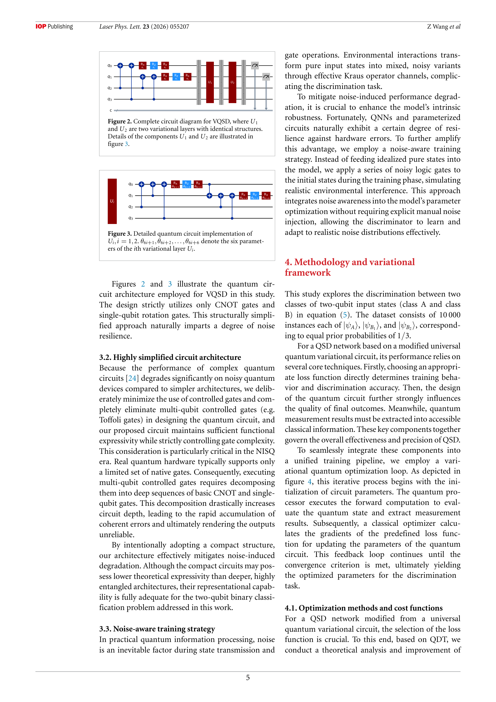
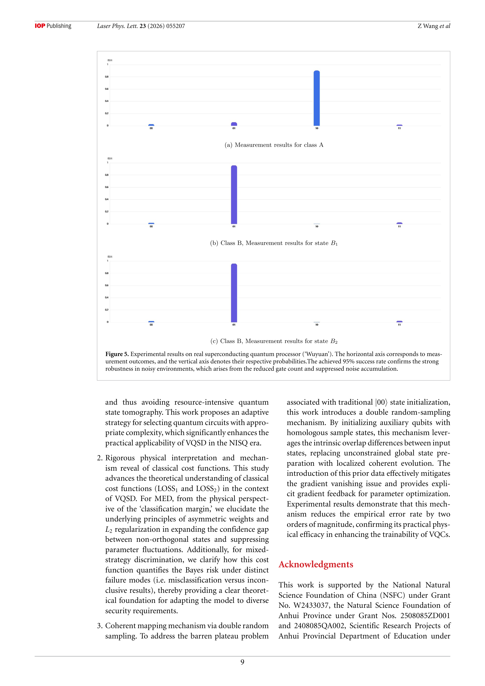
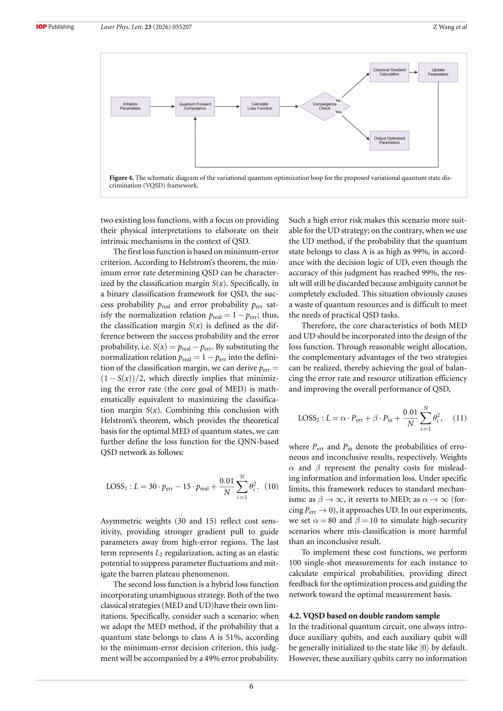

저자: Zhe Wang, Yu Huang, Xi-Kun Li, Ming Yang | 날짜: 2026 | DOI: 10.1088/1612-202X/ae6908

Figure 2. Complete circuit diagram for VQSD, where U1
본 논문은 양자 결정 이론(quantum decision theory)에 기반한 변분 양자 회로를 통해 직교하지 않는 양자 상태 판별(non-orthogonal quantum state discrimination)을 수행하며, NISQ 시대에 실용적이고 해석 가능한 프레임워크를 제시한다.

Figure 5. Experimental results on real superconducting quantum processor (‘Wuyuan’). The horizontal axis corresponds to

Figure 4. The schematic diagram of the variational quantum optimization loop for the proposed variational quantum state
총평: 본 논문은 양자 상태 판별 문제에 양자 결정 이론을 처음으로 체계적으로 적용하여 물리적으로 정당화된 신경망 아키텍처를 제시한다. NISQ 시대의 실용적 양자 알고리즘 설계에 중요한 기여를 하며, 실제 양자 프로세서에서의 우수한 성능 입증으로 높은 가치를 가진다.